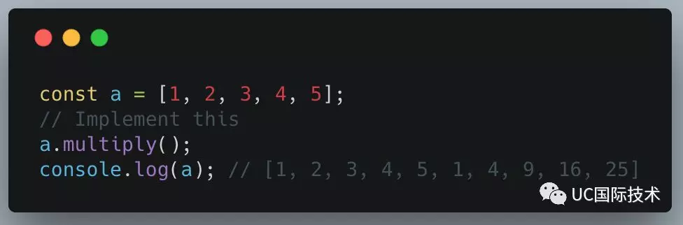
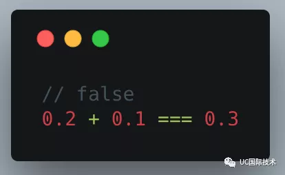
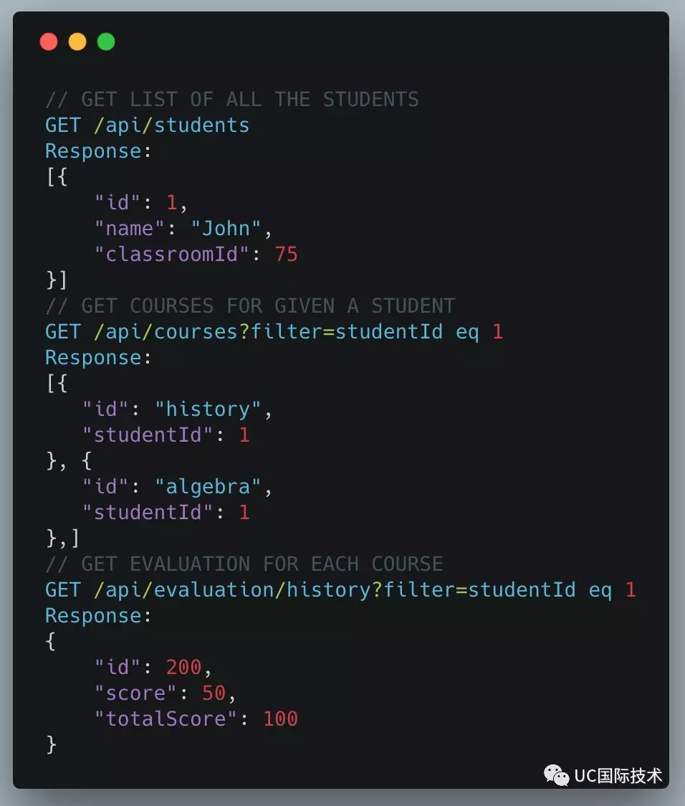
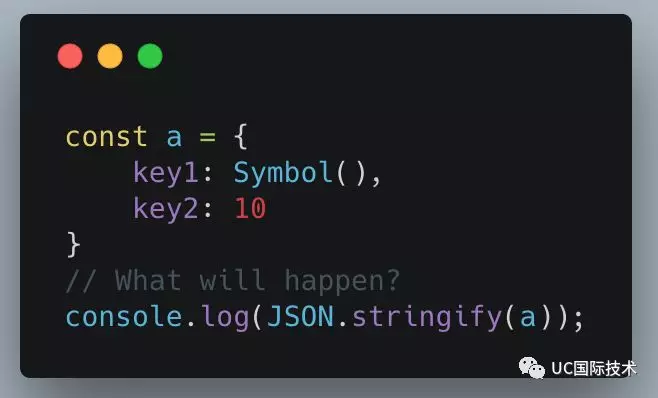
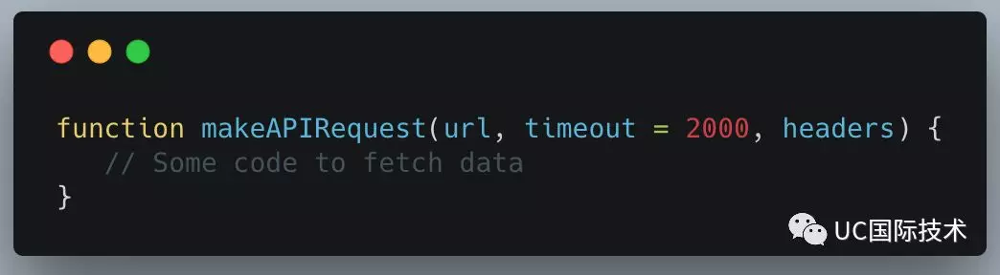
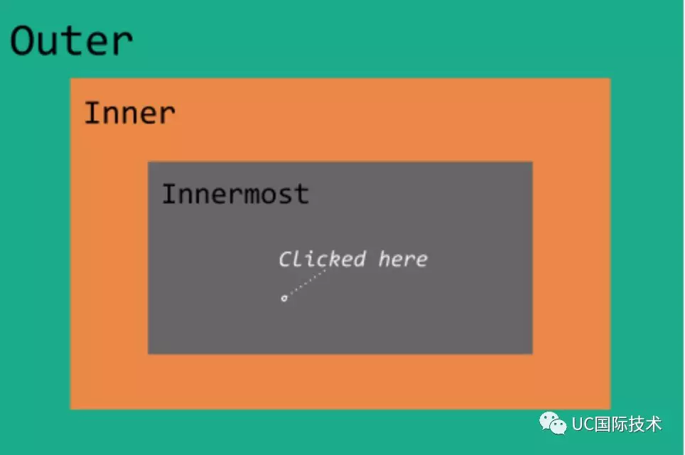

原文地址：2019年前端面试都聊啥？一起来看看
有一些问题自己的答案不是很清楚，所以直接实践后贴出来
基本的JavaScript问题
使以下代码正常运行：

参考答案：
1 | Array.prototype.multiply = function() { |
以下代码在 JavaScript 中返回false。 请说明为什么

参考答案：为什么0.1+0.2不等于0.3
不想看的我直接一句话总结
0.1在被转换成二进制时是一个二进制无限循环小数，但计算机内存有限在某个精度点直接舍弃。当代码被编译或解释后，0.1已经被四舍五入成一个与之很接近的计算机内部数字，以至于计算还没开始，一个很小的舍入错误就已经产生了。这也就是 0.1 + 0.2 不等于0.3 的原因
解决办法：使用bignumber.js
解决以下异步代码问题。
检索并计算属于同一教室中每个学生的平均分数，例子中教室 ID 为 75。每个学生可以在一年内参加一门或多门课程。以下 API 可用于检索所需数据。

编写一个接受教室 ID 的函数，并根据该函数计算该教室中每个学生的平均值。 该函数的最终输出应该是带有平均分数的学生列表：
1 | [ |
使用普通回调，promise，observables，generator 或 async/wait 编写所需的函数。 尝试使用至少 3 种不同的技术解决这个问题。
这里我尝试使用async/wait来实现
1 | //----------------async-wait版本 |
👉其实这里我们还可以使用for..of进行遍历以避免使用Promise.all
其实我觉得，设计这种接口真的不会被打吗😂
平均每个学生选了一门课 每个接口耗时50ms 一个班有100人
1 | 50 * 1 + 100 * 50 = 5050 |
需要5秒
如果选了两门课，就是10秒，还好chrome同域并发为6个。。。。
当然，如果使用http/2不会存在这种问题
使用 JavaScript Proxy实现简单的数据绑定
相信拜读过阮老师的es6入门应该都是小case
1 | const data = { |
解释 JavaScript 并发模型
讲真，18年初这块我就没怕过 😐前端疑难问题整理
“new” 关键字在 JavaScript 中有什么作用？
MDN的 new运算符
知乎的说人话版本( ﹁ ﹁ ) ~→JS 的 new 到底是干什么的？
个人总结：对相似行为对象进行抽象，在创建时更能节约内存/代码
- [[Construct]]: 这个属性应当指向构造函数本身
- [[Call]]: emmmm不是很清楚这里是否指的是Function对象的call方法
JavaScript 中有哪些不同的函数调用模式？ 详细解释。
原文提示有点问题，少了一个构造函数调用模式
- 方法调用模式
当函数（Function）作为对象属性时被称为方法（Method）。方法被调用时this会被绑定到对应的对象。比如foo.method() - 函数调用模式
当函数不是对象属性时，它就会被当做函数来调用，比如add(2,3)。 此时this绑定到了全局对象global。 - 构造函数调用模式
JavaScript中，那些用来new对象的函数成为构造函数。 - 上下文调用模式（有的地方又叫call/apply调用模式🤦）
function foo() {}
foo.call(context, 参数列表)
foo.apply(context, 参数数组)
解释即将发布的任一新 ECMAScript 提案。
- do 表达式
- throw 表达式
- 链判断运算符
- 直接输入 U+2028 和 U+2029
- 函数的部分执行
- 管道运算符
- 数值分隔符
- BigInt 数据类型
- Math.signbit()
最新提案
如果你觉得不过瘾那就走这https://github.com/tc39/ecma262
JavaScript 中的迭代器（iterators）和迭代（iterables）是什么？ 你知道什么是内置迭代器吗？
Iterator是一种接口，为各种不同的数据结构提供统一的访问机制。任何数据结构只要部署 Iterator 接口，就可以完成遍历操作（即依次处理该数据结构的所有成员）。
Iterator 的遍历过程是这样的。
- 创建一个指针对象，指向当前数据结构的起始位置。也就是说，遍历器对象本质上，就是一个指针对象。
- 第一次调用指针对象的next方法，可以将指针指向数据结构的第一个成员。
- 第二次调用指针对象的next方法，指针就指向数据结构的第二个成员。
- 不断调用指针对象的next方法，直到它指向数据结构的结束位置。
iterable 即可迭代的，实现或部署了Iterator街口,如：
1 | const obj = { |
此时的obj就是一个iterable对象，可以使用for...of进行遍历
如何在 JSON 中序列化以下对象？
如果我们将以下对象转换为 JSON 字符串，会发生什么？

key1属性将消失，因为Symbol类型的值不会被JSON.stringify返回，我们可以在调用JSON.stringify之前手动调用Symbol值的toString方法
你熟悉 Typed Arrays 吗？ 如果熟悉，请解释他们与 JavaScript 中的传统数组相比的异同？
翻译过来似乎叫类数组？
TypedArray本质上是一个抽象类，他表示9中特定类型： Int8Array, Uint8Array, Int16Array, Uint16Array, Int32Array, Uint32Array, Float32Array, Float64Array,还有一种只针对Canvas颜色值的 Uint8ClampedArray
阮老师的二进制数组
MDNTypedArray
说实话，都看得我头皮发麻，因为这些api似乎日常并不怎么使用，但是由于是对内存块进行二进制操作，会极大的提升性能。似乎很多在线的图片编辑器会采用类似的api进行处理以保证性能😥
函数的默认参数如何工作？
如果我们在调用 makeAPIRequest 函数时必须使用timeout的默认值，那么正确的语法是什么？

参考答案：传入undefined，因为满足使用默认参数的条件就是传入的值必须全等于undefined
JavaScript前端应用设计问题
这类问题相较于上面的较为开放，我选了几个觉的比较有意思的记录下
HTTP/2 将如何影响 JavaScript 应用程序打包？
http/2的多路复用会使我们对资源的打包方式有所调整，比如对于首页需要并发较多静态资源请求的情况，我们可能会使用“域名分发”（这里先排除使用雪碧图的情况），但是引入http/2之后完全不用担心这个问题。多路复用在一个请求中可以响应多个资源，比如我们请求首页，它可以把html、favorite.ico、css、js等一并返回，极大的提高了网页的加载性能，应用google的一句话来描述
HTTP/2 可以让我们的应用更快、更简单、更稳定 - 这几词凑到一块是很罕见的！
HTTP/2 简介
Fetch API 相对于传统的 Ajax 有哪些改进？
改进：promise风格的api，async/await方式调用更友好，更简洁，错误处理更直观
缺点/难点：
- fetch 是一种底层的 api，json传值必须转换成字符串，并且设置content-Type为
application/json - fetch 默认情况下不会发送 cookie
- 无法获取progress，也就是说无法用fetch做出有进度条的请求
- 不能中断，我们知道传统的xhr是可以通过调用abort方法来终止我们的请求的
其实javascript的社区一直很活跃，相信上述问题很快会在未来的更新中解决
前端基础和理论问题
HTML 中 Doctype 的用途是什么？
声明不是 HTML 标签；它是指示 web 浏览器关于页面使用哪个 HTML 版本进行编写的指令。
Doctype 不存在。
⚠会触发混杂模式，如果在文档开始处没有发现文档类型声明，则所有浏览器都会默认开启混杂模式。混杂模式在不同浏览器下的行为差异非常大，如果不使用某些hack技术，跨浏览器的行为根本就没有一致性可言。
使用了 HTML4 Doctype，但 HTML 页面使用了 HTML5 的标签，如
据我观察似乎并没有出现什么问题，猜测是浏览器检测到video这种html5的标签，应该会以html的形式去解析文档了
DOM 和 BOM 有什么区别？
DOM 全称是 Document Object Model，也就是文档对象模型。
我们可以把 HTML 看做一个对象树（DOM树），它的本身和里面的所有东西比如div标签都看做一个对象，每个对象又叫节点（node），然后有一套统一的api来操作这些内容，比如：
1 | document.getElementById('root'); |
BOM 是 Browser Object Model，浏览器对象模型。
既然DOM是控制文档的，那BOM故名思意就是控制或访问浏览器的，比如我们经常使用的：
1 | location.href = 'https://google.com'; |
JavaScript 中的事件处理如何运行？
如下图所示，我们有三个 div 元素。每个div都有一个与之关联的点击处理程序。处理程序执行以下任务：
- Outer div click处理程序将 hello outer打印到控制台。
- Inner div click处理程序将 hello inner 打印到控制台。
- Innermost div click 处理程序将 hello innermost 打印到控制台。
编写一段代码来分配这些任务，以便在单击innermost div 时始终打印以下序列？
hello inner → hello innermost → hello outer

1 | <div style="height: 400px;width: 600px;background: #34f34a" id="outer"> |
1 | document.getElementById('outer').addEventListener('click', function() { |
👆这里考察的就是事件的冒泡和事件捕获，inner元素需要事件捕获的形式绑定事件，才能达到先于innermost元素输出hello
CSS 重排和重绘之间有什么区别？
要细讲重排重绘的话要延申到浏览器的渲染原理，我们这里直接简单说说什么是重排重绘，以及问题触发的时机
- 需要重新分析并且节点尺寸需要重新计算。这被称为重排
- 由于节点的几何属性发生改变或者由于样式发生改变，例如改变元素背景色时，屏幕上的部分内容需要更新。这样的更新被称为重绘。
触发时机？
任何改变用来构建渲染树的信息都会导致一次重排或重绘。 - 修改dom（包括删除、添加和更新）
- 修改样式
- 调整窗口大小，改变网页字号。
重绘不一定会触发重排，但是重排必定会导致重绘
例如修改一个div的背景色，没有导致它的大小以及周围的元素位置变动，就只触发重绘，但是使它的display: none就会导致重排，因为它的“消失”会导致其他元素的位置变化
下面罗列一些导致重排的css样式
- display
- margin
- padding
- font-size
- width
- height
…
会导致重绘的css样式 - background-color
- color
…
总的来说，一般会导致布局变化的，都会触发重排，重排是非常消耗性能的，那么如何避免呢？ - 改变类名而不是改变样式
- 不要把读操作和写操作，放在一个语句里面（很多情况下样式的写操作之后，在读一些属性时，如：offsetTop，会让浏览器立即去重新渲染计算出你要的值）
- 使用离线DOM，Document Fragment、或者在使用
document.cloneNode方法创建的dom上去操作，完成后再去替换原先的
…
这一块阮老师写得很好：网页性能管理详解
什么是 CSS 选择器权重以及它如何工作？
这一块大多数人关注的可能就是：important> 内联样式 > id > class > tag这种，但是其实每种写法都是有权重数值的，css的权重衡量应该是数值大小，而不是写法。下面是每个样式写法的权重值（这里我们不讨论!important，因为它无视这些规则😂）：
| 选择器 | 权重 |
|---|---|
| 行内 | 1000 |
| id | 100 |
| class | 10 |
| tag | 1 |
| 属性 | 10 |
| *（通配符） | 0 |
| 伪类 | 10 |
| 伪元素 | 1 |
所以一个css样式的权重应该由权重数值计算而来，举个例子：
1 | p#title { |
👆上面这个样式的权重应该是1 + 100
1 | p.title { |
而这一个为1 + 10，生效的颜色应该是#fff
CSS中的pixel与硬件/物理中的pixel有何不同？
css中的pixel是一个相对值，基本都是浏览器根据设备像素换算得来的。硬件中的pixel密度如果较高，默认情况下一个设备的pixel可能会是css的1.5倍，或者2两倍，甚至有些会达到4倍。具体详细的解释看这里
什么时候应该使用 CSS animations而不是 CSS transitions？你做出这个决定标准是什么？
我使用animations会有一下几种情况，除此之外可能会用transitions
- 动画较为复杂，并且有多个阶段因为key-frame可以定义从0%到100%
- 需要重复播放
- 可能需要倒放
- 需要暂停并继续
如果你正在 Review CSS 代码，那么你在代码中经常遇到的问题是什么？
- 过深的嵌套
- 不合理的属性书写顺序
- 不关注文件大小，书写过多冗余的样式
- 值简写
- 不够规范的命名